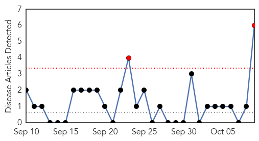
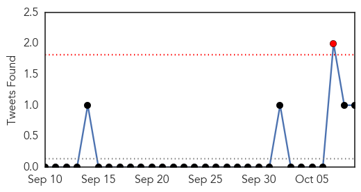
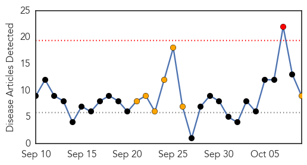
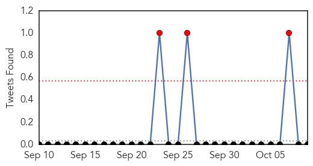

Swine Flu
30-Day Web Trend
2 alerts, 0 warnings

30-Day Twitter Trend
1 alerts, 0 warnings

Article Locations

Article Confidences

Top Articles:
- 0.997
- EV-D68 cases show signs of slowing
- 0.988
- Tools to predict pandemics becoming more critical
- 0.978
- Man dies of swine flu, death toll rises to 6 in Indore
- 0.865
- 'Get a Shot. Give a Shot' lets you help kids in developing countries
- 0.850
- Preparing for the worst; a pandemic in Washoe County
- 0.663
- Schools set plan to prevent virus outbreaks
Top Tweets:
- 0.978
- We do not shut our borders to countries affected by Ebola; didn’t w/ SARS or pandemic H1N1 flu.
- 0.978
- We do not shut our borders to countries affected by Ebola; didn’t w/ SARS or pandemic H1N1 flu.
- 0.657
- Since the 2009 H1N1 pandemic, much has been learned about flu and pregnancy. More in http://t.co/C0KWECwk1T Clinicians
Dengue Fever
30-Day Web Trend
1 alerts, 7 warnings

30-Day Twitter Trend
0 alerts, 2 warnings

Article Locations

Article Confidences

Top Articles:
- 0.980
- China reports more than 27,000 dengue cases- China.org.cn
- 0.973
- Dengue Fever Cases Exceed 27, 000 in China
- 0.962
- Mosquito-borne infection: Health department braces for dengue after rain
- 0.956
- Plans to combat dengue fever to be formulated by next spring ‹ Japan Today
- 0.949
- Dengue fever outbreak up another 1,800 in South China
- 0.931
- Six dead in dengue fever outbreak in southern China
- 0.901
- Post-flood health worries in Pakistan - Pakistan
- 0.899
- Post-flood health worries in Pakistan
- 0.885
- Domestic company's dengue fever test approved
Top Tweets:
- 0.762
- http://t.co/WstY6wOWxg denguevaccine dengue vaccine india ascelbio forecast outbreak sanofi disease forecasting
- 0.577
- Flavivirus news: Mosquito-borne infection: Health department braces for dengue after rain - The... http://t.co/6ac7XBodzS pathogenposse